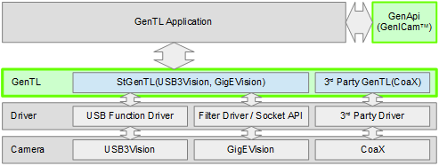

GenICam
The APIs for industrial cameras differ by their interfaces, makers, and board makers. To unify the application development for cameras with different interfaces, EMVA(European Machine Vision Association) has established the GenICam Standard(http://www.GenICam.org) which consists of various conventions. One of the convention is to standardize camera's API through GenICam GenTL standard. By using a dynamic library file (cti extension) complying with the GenTL standard, it is possible to develop an application independent of the camera's interfaces or makers.
| Standard | Details |
|---|---|
| SFNC (Standard Features Naming Convention) | This standard defines the name of the functions and the type of the settings. By following this standard, you can use the same functions with a unified name across different camera makers. For example, the exposure time of cameras is defined as "ExposureTime" with the unit in microseconds. |
| PFNC (Pixel Format Naming Convention) | Defines the name of all pixel formats and the value for identification. |
| GenApi (Application Programming interface) | For all the cameras which complies with the GenICam standard, the name of the implemented functions and its register addresses are stored in an XML file. The format and the API for reading and writing the XML file are defined and provided for free. With the XML file and the provided API, users can access the camera settings without the need to know the register address of the functions inside the cameras. |
| GenCP (Control Protocol) | The communication protocol for USB3Vision and Camera Link HS is specified. |
| GenTL (Transport Layer) | The API to communicate with camera is defined by this standard. GenTL encapsulates the low-level camera interfaces so that user can control camera without concerning the differences between the camera interfaces or grabber boards. Note that while this is optional for GigEVision and USB3Vision cameras, it is a must-have standard for CoaXPress. |
| GenTL SFNC (GenTL Standard Features Naming Convention) | SFNC for GenTL. |
| GigEVision, USB3Vision, CoaXPress, Camera Link HS | Terms and conditions to follow for each interface are defined. With these standards, the image processing library will be able to access cameras from different manufacturers. |
These standards are standardized by the following organizations (documents can be obtained from their websites).
| Standard group | URL | Standards |
|---|---|---|
| EMVA (European Machine Vision Association) | http://www.emva.org/ | GenICam(SFNC, PFNC, GenApi, GenCP, GenTL, GenTL SFNC) |
| AIA (Automated Imaging Association) | http://www.visiononline.org/ | GigEVision, USB3Vision, Camera Link HS |
| JIIA (Japan Industrial Imaging Association) | http://www.jiia.org/ | CoaXPress |
With these standards and the generic API and naming (GenAPI, GenTL, SFNC, PFNC), user can develop applications without dependency to a particular camera interface and manufacturer.

However, it is necessary to have a deep understanding on GenTL and GenApi before using them. Image processing library, which does not included in GenTL, may also be needed to convert RAW image data which is in the format of Bayer arrangement to RGB data.
StApi
The StApi simplifies the use of GenTL and GenApi by hiding the complex processes from users. The StApi also provides image processing functions and GUI functions to let users focus on their application development without concerning the low-level details of the image acquisition and processing.
The StApi supports the following interfaces (manufacturers) of cameras:
- USB3Vision (GenTL Api included in this SDK)
- GigEVision (GenTL Api included in this SDK)
- CoaXPress (GenTL Api by Euresys/SiliconSoftware/Kaya/ActiveSilicon*)
The StApi supports USB3Vision, GigEVision and CoaXPress cameras.
- Attention
- *Since Kaya and ActiveSilicon do not provide GenTL cti file for Linux, GenTL Api by Kaya and ActiveSilicon are supported under Windows only.
The structure of the StApi is shown in the figure below. Users use the modules in the green box. There are three main modules/functionalities in StApi:
- Transport Layer: consists of five interfaces (System, Interface, Device, DataStream, Stream Buffer) correspond to the five modules of the GenTL. This module encapsulates the complexity of GenTL and GenApi. Through using the GenICam GenTL and GenApi, it is possible to access the camera setting and aqcuire the image and events data.
- Image processing: contains image converter, filter, and functions to store the acquired images as a still-image file or video file.
- GUI: provides a ready-to-use GUI Window for device selection, nodemap display, and image display.
See Programmer's Guide for the detail.

Next to read: